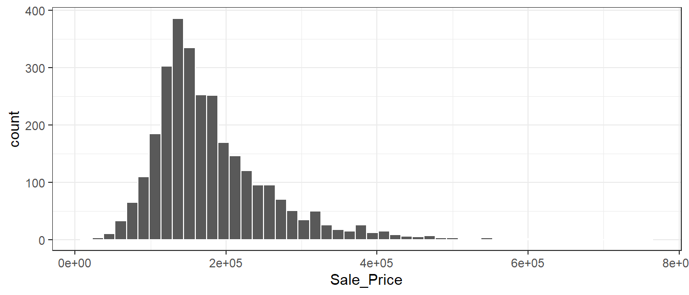

各位看客：
Learn-R 仍在写作流程中。本章节正在进行写作和结构调整，可能出现混乱或不完整的情况。
Learn-R 仍在写作流程中。本章节正在进行写作和结构调整，可能出现混乱或不完整的情况。
本章为Tidy Modeling with R的学习笔记。
一个模型的效用取决于它的还原能力，或将复杂关系简化的能力。 随着模型变得更加强大和复杂，也更容易犯隐蔽性错误。同样的原则也适用于编程。软件应该尽可能地保护用户不犯错误，使其轻松地做正确的事。易于正确适用和良好的方法实践是模型开发至关重要的两点。
按使用目的分类，模型可以大致分为：
描述模型：用于描述或说明数据的特征，这样的分析可能没有其他目的，只是直观地强调数据中的趋势或假象。
推断模型：用于为研究问题产生结论或探索特定的假设，类似于统计推断。
预测模型：用于对新数据进行尽可能地预测。按照模型开发方式，可以分为mechanistic model（机械性模型，利用数据估计方程未知参数）和empirically driven model(经验驱动模型，往往属于机器学习的范畴)。
将统计显著性作为衡量模型质量的唯一标准很危险。经过统计优化的模型可能具有较差的准确性或在其他衡量预测能力的指标上表现不佳。
预测性能往往与模型的拟合值和观测数据的接近程度有关。虽然描述模型和推断模型的主要目的可能与预测无关，但是不应该忽视它们的预测能力。如果有一个P值显著但是预测准确率惨淡的模型，我们应该多大程度上相信推论呢？
在建模之前，有几个关键阶段：
数据清洗：审查数据以确保数据符合项目的目标，具有准确性和恰当性。
探索性数据分析（EDA）：了解不同变量之间的关系，变量的分布、范围等属性。这个阶段要问的一个好问题是：“我是如何得到这些数据的？”。这个问题可以帮助了解手上的数据是如何抽样和筛选，以及这样的操作是否恰当。EDA可能与数据清洗有部分重叠。
明确模型目标和判断模型性能的方法，至少需要设定一个有针对性的性能指标。
图 4.1 展示了确定适当模型的典型路径。一般的阶段是：

探索性数据分析对建立高质量的模型至关重要。
library(tidymodels)
tidymodels_prefer()
library(ggplot2)
data(ames, package = "modeldata")Ames数据集包含了爱荷华州Ames市lowa的2,930个房产信息，主要包括：
我们根据掌握的信息，预测房子的销售价格。
ggplot(ames, aes(Sale_Price)) +
geom_histogram(bins = 50, col = "white")
数据是右偏的，便宜的房子比贵的房子数量多。售价中位数是160,000美元，最贵的房屋为755,000美元。对这样的结果建模时，应该进行对数转换，这样就没有预测房屋售价为负数的情况，也可以防止预测售价昂贵的房子对模型产生影响。另外，从统计学的角度来看，对数转换也可以稳定方差，使推论更加合理。
ggplot(ames, aes(Sale_Price)) +
geom_histogram(bins = 50, col = "white") +
scale_x_log10() +
labs(x = "售价对数（10为底）")转换的缺点主要在于转换后的模型难以解释，包括模型系数的单位、性能衡量。
ames <- ames %>% mutate(Sale_Price = log10(Sale_Price))在项目的开始，通常有一个的有限数据集，可以把它看成是可用的数据预算。如何将这数据应用于不同的步骤和任务？数据支出的想法是建模时一个重要考虑因素，尤其是它与经验验证有关。
当数据重复用于多个任务，而不是从谨慎地从数据预算中支出时，某些风险就会增加，比如加重偏差的风险或方法错误带来的复合效应。
当有大量的数据可用时，明智的策略是将特定的数据子集分配给不同的任务，而不是将尽可能多的数据（甚至全部）只分配给模型参数估计。 如果最初可用的数据并不庞大，那么”花费”或分配数据时就会有一些重叠，一个坚实的数据支出方法十分重要。
如何进行数据分割取决于研究背景。假设我们把80%的数据分配给训练集，剩下的20%用于测试。最常见的方法是使用简单的随机抽样。rsample包(Silge et al. 2022)包含可以进行数据分割的工具，函数initial_split()就是为此目的而创建的：
set.seed(501) # 设置随机数流，以便结果的可重复
ames_split <- initial_split(ames, prop = .8)
ames_split
#> <Training/Testing/Total>
#> <2344/586/2930>ames_split是一个rsplit对象，只包含划分信息，为了得到数据集，需进行下一步操作：
ames_train <- training(ames_split) # 训练集
ames_test <- testing(ames_split) # 测试集简单的随机抽样在大多数情况下是合适的，但也存在例外。 当存在巨大的分类不平衡时，一个类的出现频率远低于另一个。这时候使用简单的随机抽样可能将不经常出现的样本不成比例地分配到训练或测试集中。
为了避免这种情况，可以使用分层抽样。在每个类中分别进行训练/测试集的分割，然后将子样本合并到整个训练/测试集中。对于回归问题，结果数据可以被人为地划分为四分位数，然后进行四次分层抽样。这是保持训练集和测试集之间结果分布相似的有效办法。
图 4.4 中的三条竖线（四分位数）将数据集分成四份，分层随机抽样将在每个子集中进行80/20的分割，然后将结果汇集起来。通过initial_split()中的strata参数实现：
set.seed(502)
ames_split <- initial_split(ames, prop = .8, strata = Sale_Price)
ames_train <- training(ames_split)
ames_test <- testing(ames_split)只有一列可以用于分层，分层抽样的弊端很小。
当数据有时间成分时（比如时间序列数据），随机抽样不是最好的选择。这种情况下，常见的做法是使用最近的数据作为测试集。 rsample包的initial_time_split()函数不使用随机抽样，其prop参数控制多少比例的数据被用作训练集。该函数假定数据已按照恰当的顺序预先排序了。
在数据分割时，我们指出测试集是用来评估最终模型性能的数据。这就有一个问题：“如果在测试集之前不测量性能，我们怎么才能知道什么是最好的？”
验证集经常作为这个问题的答案，尤其是是在神经网络和深度学习的文献中。神经网络发展早期，研究人员意识到，通过重新预测训练集样本来衡量性能，会使结果过于乐观（明显是不现实的）。这导致了模型的过度拟合，也就是说，它们在训练集上的表现非常好，但在测试集上的表现却很差。
为了解决这个问题，一小部分验证集的数据被保留下来，用来衡量网络训练时的表现。一旦验证集的错误率开始上升，训练就会被停止。换句话说，验证集是一种手段，可以粗略了解模型在测试集之前的表现如何。
验证集是训练集的一个子集，还是数据初始分割时的第三种分配，主要取决于语义。
首先，将测试集与任何模型构建活动隔离开来至关重要。当训练集以外的数据被用于建模过程时，就会出现信息泄露的问题。
例如，在机器学习比赛中，可能提供没有真实值的测试集数据，以对模型进行评分和排名。一个潜在的提高分数的方法是使用与测试集值最相似的训练集来拟合模型。虽然测试集并不直接用于拟合模型，但它仍然有很大的影响。一般来说，这种技术是非常有问题的，因为它降低了模型的泛化误差，以优化特定数据集上的性能。在训练过程中，有一些更微妙的方法可以使用测试集数据。将训练数据保存在与测试集分开的数据框中，以确保不会意外发生信息泄露。
其次，对训练集进行子采样的技术可以缓解特定的问题（例如，类不平衡）。这是一种有效且常见的技术，它故意使训练集数据与数据来源的群体发生分歧。测试集反映模型在野外遇到的情况至关重要；换句话说，测试集应该总是赋予模型新数据。